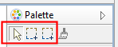

The selection tool options
There are two selection tools available in the Palette. These are used to select the elements in a diagram in various ways.

The selection tools in the Palette
The first tool (selection tool) is used to select elements (boxes) only. When dragging a marquee area around elements and connections, only the elements (boxes) will be selected.
The second tool (marquee tool) is a drop-down button and is used to select both elements and connections in various ways:
The selection tool options
 Tip: Pan the View using the selection tool
Tip: Pan the View using the selection tool
If you select the first selection tool from the Palette, click somewhere on the View to give it the focus and then hold the Space bar down the cursor will change to a hand and you can pan the View. You can also pan around the View using the middle mouse button.